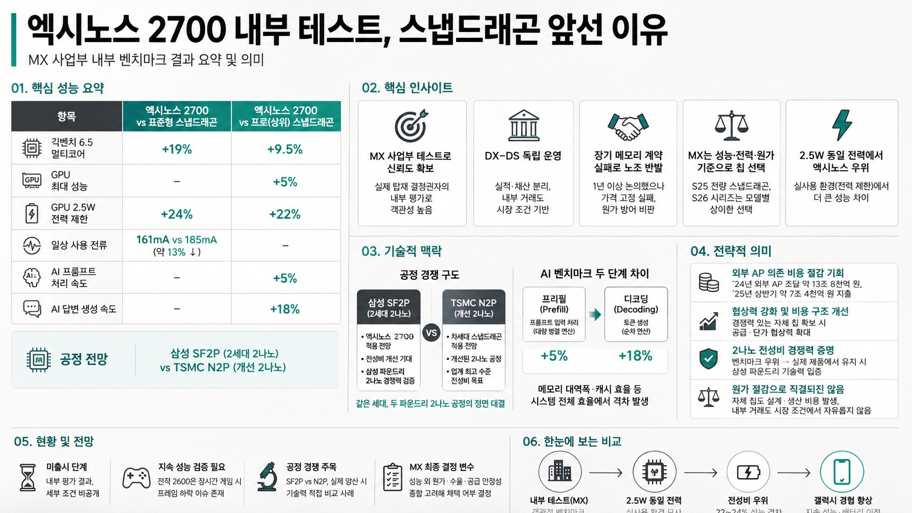

안될공학 - IT 테크 신기술MORNING DIGEST · 2026-08-27 · 안될공학 - IT 테크 신기술🎬 영상
엑시노스 2700 내부 테스트, 스냅드래곤 앞선 이유

01핵심 개요 (표)
항목
내용
채널
안될공학 - IT 테크 신기술
핵심 주제
엑시노스 2700 vs 퀄컴 차세대 스냅드래곤 내부 벤치마크 결과
테스트 주체
시스템LSI(설계)가 아닌 MX 사업부(실제 탑재 결정권자)의 내부 평가
긱벤치 멀티코어
표준형 대비 +19%, 프로(상위)급 대비 +9.5%
GPU 최대 성능
프로 대비 +5%
GPU 2.5W 전력 제한 시
표준형 대비 +24%, 프로 대비 +22%
일상 사용 전류
엑시노스 161mA vs 퀄컴 상위 185mA (약 13% 절감)
AI(3.18B 모델) 성능
프롬프트 처리 +5%, 답변 생성 속도 +18%
공정 전망
삼성 SF2P(2세대 2나노) vs TSMC N2P(개선 2나노)
02핵심 기능/내용 구조
MX 사업부 테스트라 신뢰도가 높다: 엑시노스를 설계하는 시스템LSI(DS 부문 홍보성 자료)가 아니라, 실제 갤럭시에 어떤 칩을 넣을지 결정하는 MX 사업부(DX 부문)가 비교한 결과라서 객관성이 더 높다고 평가된다 (00:27).
삼성 내부에서도 DX-DS는 별도 이해관계: 갤럭시를 만드는 MX는 DX 부문, 엑시노스 설계(시스템LSI)와 생산(파운드리)은 DS 부문 소속으로 독립 운영되며 실적도 따로 공시된다. 올 상반기 DX의 모바일 메모리 매입가는 전년 대비 211% 상승, DS의 메모리 평균판매가는 220% 상승해, "같은 삼성"이라는 이유로 MX가 원가 완충을 받았다고 보기 어렵다는 점이 이 관계를 뒷받침한다 (00:55).
메모리 장기계약 실패로 노조 반발: 지난해 MX·DS가 메모리 가격 급등에 대비해 1년 이상 장기 공급계약을 논의했지만, 결국 가격은 고정하지 못하고 기존처럼 분기 단위 협상을 유지했으며 이듬해 공급 물량에만 합의했다. DX 직원 중심의 동행노조는 원가 방어 실패를 이유로 경영진을 공개 비판했다 (01:53).
MX는 무조건 엑시노스를 쓰지 않는다: 2025년 초 출시된 S25/S25+/S25울트라는 전량 스냅드래곤 엘리트를 탑재했고, 올해 국내 출시 S26/S26+에는 엑시노스 2600, 울트라에는 스냅드래곤이 들어갔다. MX 입장에서 중요한 건 제조사·사업부가 아니라 갤럭시에서 성능·전력·원가를 맞출 수 있는 칩인지 여부다 (02:21).
2.5W 동일 전력 제한 테스트가 핵심 신호: 최대 성능에서는 GPU 격차가 5%에 불과했지만, 두 칩에 동일한 2.5W 전력 예산을 준 뒤 비교하자 엑시노스 2700이 표준형 대비 24%, 프로 대비 22% 더 높은 성능을 냈다. 스마트폰은 배터리·발열 한계로 전력을 무한정 늘릴 수 없어, 동일 전력 내 성능이 실사용에서 더 중요한 지표로 꼽힌다 (04:03).
전작 엑시노스 2600의 개선 흐름 연장선: 엑시노스 2600은 삼성 첫 2세대 GAA 모바일AP로 GPU 파워 도메인 구조를 개선하고 히트 패스 블록을 새로 넣어 내부 열저항을 최대 16% 낮췄다. 다만 실제 제품에서는 장시간 사용 시 성능 저하가 있었는데(안드로이드 오소리티 아스팔트 레전드 테스트에서 10분 만에 평균 113프레임→80프레임 하락), 2700의 2.5W 결과가 이 문제를 개선했을 가능성을 시사한다 (05:00).
03기술적 맥락
공정 경쟁 구도: 엑시노스 2700은 삼성 파운드리의 2세대 2나노 공정(SF2P)을 사용할 것으로 알려졌고, 경쟁 상대인 퀄컴 차세대 상위 스냅드래곤은 TSMC의 개선된 2나노 공정(N2P) 채택 가능성이 거론된다. 두 조합이 실제 제품으로 이어지면 삼성 SF2P와 TSMC N2P 기반 플래그십 AP가 같은 세대에서 정면 대결하게 된다 (05:56).
AI 벤치마크의 두 단계 차이: LLM 추론은 프롬프트를 한 번에 읽고 계산하는 프리필(prefill) 단계와, 토큰을 하나씩 생성하는 디코딩(decoding) 단계로 나뉘며 필요한 자원 성격이 다르다. 프롬프트 처리 속도는 +5%인 반면 답변 생성 속도는 +18% 차이가 난 것은, 단순 연산 성능보다 메모리 대역폭과 캐시를 포함한 시스템 전체 효율에서 격차가 났을 가능성을 시사한다 (06:40 부근).
04전략적 의미
이번 결과가 실제 갤럭시 S27 제품에서도 유지된다면, 엑시노스는 단순 벤치마크 우위를 넘어 삼성 파운드리 2나노 공정의 전성비 경쟁력을 증명하는 사례가 된다.
MX 사업부 입장에서는 삼성전자 DX 부문이 지난해 외부 AP 조달에 약 13조 8천억 원, 올 상반기에만 약 7조 4천억 원을 지출한 만큼, 경쟁력 있는 자체 칩 확보는 협상력 강화와 비용 구조 개선의 실질적 카드가 된다 (08:20 부근).
다만 엑시노스 채택이 곧바로 원가 절감으로 이어지는 것은 아니다. 자체 칩도 설계·생산 비용이 들고, 삼성 내부 부품 거래도 시장 조건에서 자유롭지 않다는 점(메모리 사례 참조)이 이를 뒷받침한다.
05핵심 워크플로우 또는 비교표
테스트 항목
엑시노스 2700 vs 표준형 스냅드래곤
엑시노스 2700 vs 프로(상위) 스냅드래곤
긱벤치 6.5 멀티코어
+19%
+9.5%
GPU 최대 성능
-
+5%
GPU 2.5W 전력 제한
+24%
+22%
일상 사용 전류
161mA vs 185mA(약 13%↓)
-
AI 프롬프트 처리 속도
-
+5%
AI 답변 생성 속도
-
+18%
06활용 시나리오
갤럭시 S27 구매 판단 기준 마련: 실제 출시 후 동일 성능에서의 전력 소모, 장시간 게임 시 성능 유지율, 배터리 사용 시간을 비교해 이번 내부 테스트 수치(2.5W에서 22~24% 격차)가 실사용에서도 재현되는지 확인하는 체크리스트로 활용할 수 있다.
반도체 업계 동향 추적: 삼성 파운드리 2나노(SF2P)와 TSMC 2나노(N2P)의 세대별 경쟁 구도를 이해하는 사례로, 향후 다른 팹리스 업체의 공정 선택 뉴스를 해석하는 배경지식으로 삼을 수 있다.
기업 내부 조직구조 분석 참고: 삼성전자 DX-DS 부문 간 독립 채산·협상 구조 사례는 대기업 사업부제의 실제 작동 방식(내부 거래도 시장가 기준)을 이해하는 데 참고할 수 있다.
07현황 및 전망
엑시노스 2700은 아직 미출시 상태이며, 이번 결과는 세부 조건이 전부 공개되지 않은 내부 평가라 과도한 낙관은 이르다.
전작 엑시노스 2600은 벤치마크 격차는 좁혔지만 장시간 게임 시 프레임 하락 등 지속 성능 이슈가 있었던 만큼, 2700이 이를 실제로 해결했는지가 검증 포인트다.
공정 경쟁 구도(삼성 SF2P vs TSMC N2P)가 실제 양산까지 이어질 경우, 이번 세대는 두 파운드리의 2나노 기술력을 가늠하는 직접 비교 사례가 될 전망이다.
MX 사업부의 최종 채택 여부는 성능뿐 아니라 원가·수율·공급 안정성 등을 종합 고려해 결정될 것으로 보인다.